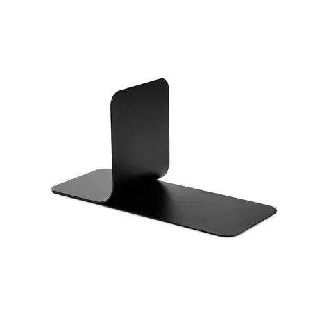
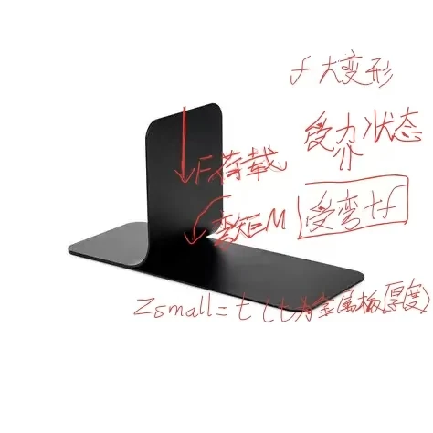
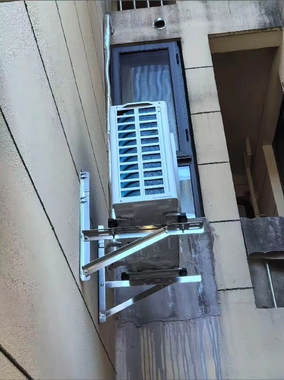
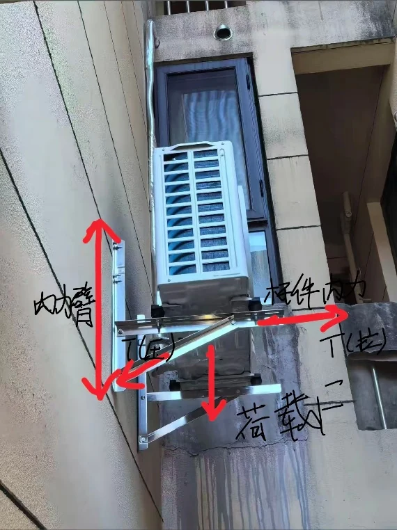

大连交通大学 · 智能建造23
我的原作作业标题：从“受弯”到“轴力”的跨越——三角支架中“内力臂”的跃迁分析
王鹤然
（1）表达力学问题：悬臂受力体系的深化
1. 问题的物理意义：受弯的低效性
在日常生活中，搁板支撑（如书架L型书立）通常被简化为悬臂梁（Cantilever Beam）模型。
对于一个承受端部集中荷载 的L型构件，其根部弯矩最大：。
若仅依靠材料本身的厚度 来抵抗弯矩，根据正截面承载力基本原理，其内力臂 被限制在极小的板厚范围内。
根据弯曲正应力公式：
由于厚度 极小且位于分母的平方项，导致根部应力 急剧升高，材料利用率极低，且变形（挠度）巨大。
2. 优化机理：内力臂 的外化与桁架化
参考资料（Beam String Structure）中提到的优化思路是引入“撑杆（Strut）”来增加结构深度。在三角支架中，斜撑（Diagonal Brace）的引入，实质上是将受力模式从“梁机制（Beam Action）”转化为“桁架机制（Truss Action）”。
此时，抵抗外弯矩 的不再是截面内部微观的应力偶，而是宏观的拉压杆件力偶：
其中，（内力臂）从微小的板厚 跃升为整个支架的高度 。
这一几何跃迁意味着：在承受相同外力矩 时，杆件内的内力 将成百倍地减小。
（2）生活中体现：书立与空调支架的刚度对比
【实验设计】
选取生活中常见的两种支撑形式，通过施加荷载感知其刚度差异。
1. 对照组：L型书立（受弯模式）
照片内容：

图片标注：

配文说明：
L型支架依靠根部截面的抗弯刚度工作。由于截面有效高度 t 仅为板厚，内力臂 极小，导致在较小荷载下即发生显著的弹性变形，手感“软”，刚度明显不足。
2. 实验组：三角支架（桁架模式）
照片内容：

图片标注：

配文说明：
引入斜撑后，结构形成了稳定的三角形体系。外力矩 被转化为一对力偶：水平杆受拉，斜杆受压。此时内力臂 等于支架高度 。由于 ，结构刚度极大，几乎不产生肉眼可见的变形。
（3）对照《结构设计原理》内容（30分）：内力臂与受力效能
本案例通过构造形式的改变，完美诠释了教材中关于受弯构件与轴心受力构件的核心差异：
1. 内力臂 的最大化 (Maximization of Internal Lever Arm)
在《结构设计原理》正截面承载力计算中，承载力极限方程为：
或者在配筋混凝土中表达为 。
对照分析： 三角支架的设计本质，就是通过构造手段“制造”出一个巨大的有效高度 （即支架高度 ）。这使得内力臂 达到最大化。这与参考资料中通过加撑杆（Strut）将“梁”变为“张弦梁/深梁”以增加结构深度的逻辑如出一辙。
2. 受力模式的转化：从 到
教材在绪论及材料力学回顾中提到，受弯构件的材料利用率较低，因为应力沿截面高度呈三角形分布：
仅边缘材料达到屈服强度 ，中性轴处应力为零。
而轴心受力构件（桁架杆件）的应力是均匀分布的：
对照分析： 三角支架利用斜撑，将复杂的“弯曲”分解为简单的“拉”与“压”。这使得构件截面上的每一个微元都能充分发挥材料强度 。这是结构形态优化中“强材强用”的最高境界。
3. 压杆稳定 (Stability of Compression Members)
教材在钢结构或受压构件章节特别强调了稳定性问题。
对照分析： 在三角支架中，虽然刚度极大，但斜撑作为受压杆件（Strut），必须考虑长细比 。如果斜撑过细过长，虽然强度满足，但可能发生失稳（Buckling）。这也是为什么生活中的三角支架斜杆通常会设计成L型角钢或带有加强筋，以增大回转半径 ，防止失稳破坏。
这是一份便于网页阅读的原作视图，保留提交内容的文字、图片和基本顺序；公开页面不显示学号。